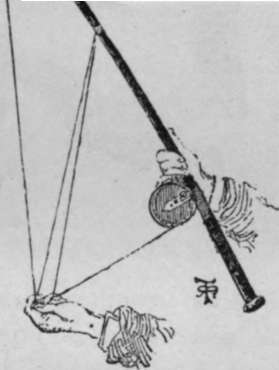
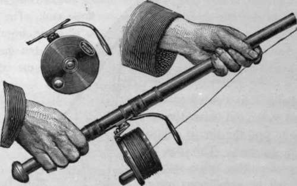
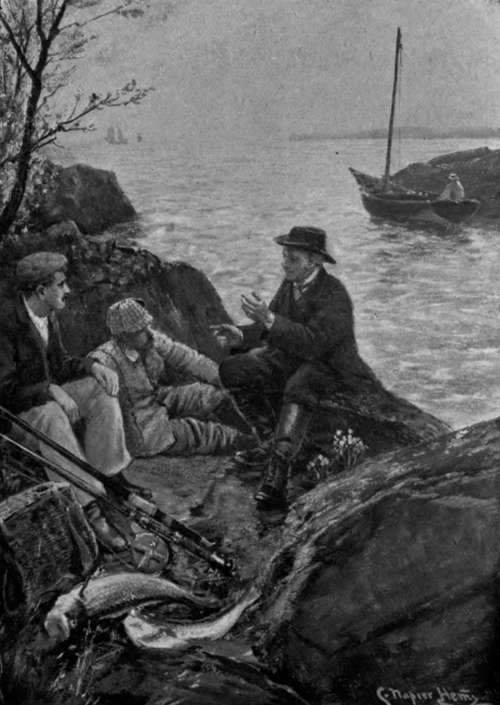

From Land And Pier. Part 5
Description
This section is from the book "Sea Fishing", by John Bickerdyke. Also available from Amazon: Sea Fishing.
From Land And Pier. Part 5
It is a very free-running reel, mind ; and, on being started with a jerk, soon revolves infinitely faster than is required by the line which is leaving it. In anglers' language, it will 'overrun ' unless slightly checked. The bait steadily loses way, but the reel keeps whirling round at an enormous rate, and the most fearful entanglement will ensue if its speed is not diminished. When the bait has passed halfway on its course through the air, or sometimes a good deal less, the first finger of the left hand should gently touch the rim of the reel and put on a slight drag, stopping the reel altogether just as the bait touches the water. The drag is not intended to check the bait, but simply to cause the reel to revolve only just so fast as is required to feed line to the bait which is passing through the air.
For the first day or two it is as well not to attempt any long casts, and it is far better to put too heavy a drag on the reel than too light a one. Not only has the art to be acquired, but the particular reel the tiro is using has to be learned. I made many a bad cast with a new rod or reel until I got into the way of it, and am not ashamed to confess it, for it is the experience of most fishermen.
When the cast has been made the next thing to do is to reel in the line quickly until the bait is brought right up to our feet. The butt of the rod should rest on the left hip, the left hand now holding the rod above the reel, on to which it guides the line, while the right hand does the winding. It will be noted that when making the cast, I directed the right hand to be above the reel and the left hand below it. This, though it necessitates a shift of the hands when winding in begins (unless the reel is reversed and wound in with the left hand), will be found most convenient by the majority who have more power and command over the right arm than the left. But those who are not too right-handed (I know men who fly fish as well with the left hand as the right) will certainly be well advised to practise casting from the reel holding the left hand above the reel and the right hand below it, with the first finger of the right hand checking the reel. When winch fittings are some distance from the lower end of the butt, which involves one hand being held a few inches below the reel, the checking may be done by the little finger of the hand held above the reel. This seems a complicated matter in letterpress, but is simple enough in practice.
The tackle should not be taken out of the water until it is close to the edge of the rocks, for fish frequently follow it, seizing it at the last moment. When a bass takes a bait offered to him Nottingham fashion and makes one of his grand rushes, there is no loose line to catch in anything, and the fish may be played on the reel, just as one would play salmon or trout.
The beginner will do well, as soon as the fish is on, to push up the button, which has the effect of turning the reel into a check ; but those who are used to the Nottingham reels put on any drag they require by keeping a finger on the rim of the reel. When it comes to gaffing the fish and holding the rod in the left hand with the butt on the thigh, then the little finger of the left hand, which will be above the reel, comes down to the rim of its circumference and prevents it revolving.
There is a method of making short casts of ten or fifteen yards which is extremely useful, particularly with light tackle, as, for instance, a small float weighted with a few shot. Such tackle cannot be cast off a reel, at least not with the line and reel we should be using in the sea, and success sometimes depends entirely upon getting out tackle some distance beyond the point of the rod. I mentioned earlier (p. 185) that the snake rings were not suitable for the two lowest rings on a rod-butt, owing to their interfering with a certain method of casting, and this is it. Stand with the rod in the right hand, pull half a dozen yards of line off the reel, and hold loops of the line on fingers of the left hand in the manner shown in the illustration. Make a cast, and, as the tackle flies out, release first the topmost loop, then the others in turn, and lastly the loop above the first ring ; the few yards of line which may be on the ground will follow. This may seem very complicated, but is, I think, more easily learned than casting from the reel.
Perhaps the easiest method of casting is by means of the malloch reel. Mr. Geogehan, of the British Sea Anglers' Society, uses this reel with great effect on the East coast, casting out his tackle a long distance and catching many large cod. The cast is made from the reel, but instead of the drum revolving, it is twisted at right angles to the rod before the cast is made, and the line is slipped off it sideways. This has the effect of putting twists into the line, but by a judicious use of swivels this drawback is to a great extent overcome. Owing to the support to the drum working on a pivot in the foot or plate of the reel, when a heavy weight was being wound in, the drum was apt to wobble a little. I understand, however, that recent alterations have been made in the mechanism of the reel which tend to overcome these weak points in a very clever invention. The kinking is evaded by occasionally removing the drum of the reel and turning it so as to make the line slip off it the other side. This reverses all the twists in the line, but involves winding the reverse way, which requires some practice. An improved pivot is now used which, so the maker alleges (I have not had an opportunity of trying it), prevents the reel from wobbling when a heavy fish is being played.
Method Of Casting Out Light Tackle.
When fishing from high piers, casting is anything but a convenient method of working the bait, owing to the distance of the rod from the water. For bass and pollack it is not, as a rule, necessary to cast from such places, because these fish are found close to the piles of pier, jetty, and the like, and many of them are caught by simply sinking and drawing the bait through the water, or even by walking up and down the pier and trailing the bait. A live ragworm has been the death of many a pollack in such places, and a small sand-eel, a strip of mackerel-skin, or a few oyster beards are all killing baits for midwater or surface fishing.
Malloch Reel.
'ON A PRECIPITOUS ROCK'.
Continue to:
Tags
fishing, hooks, bait, fishermen, spanish mackerel, mackerel fishing